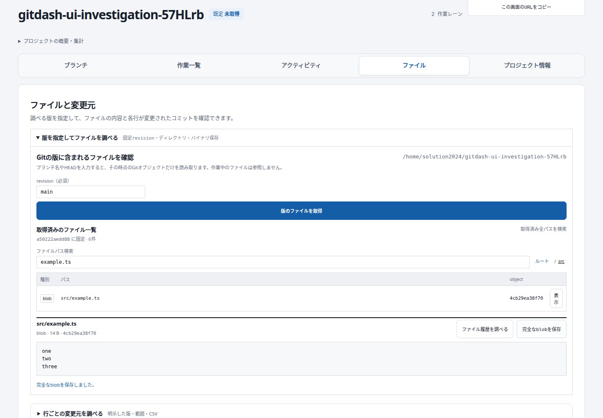
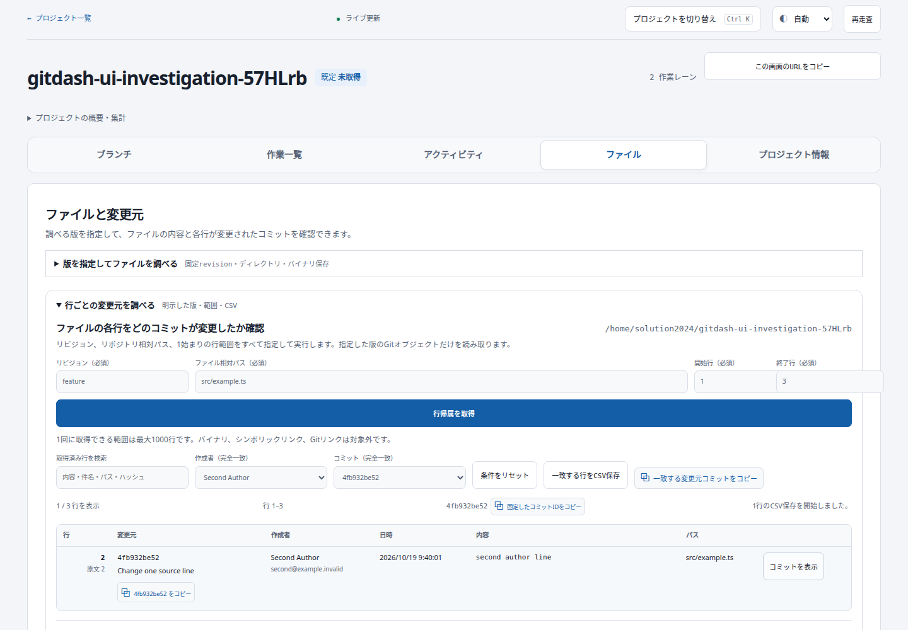
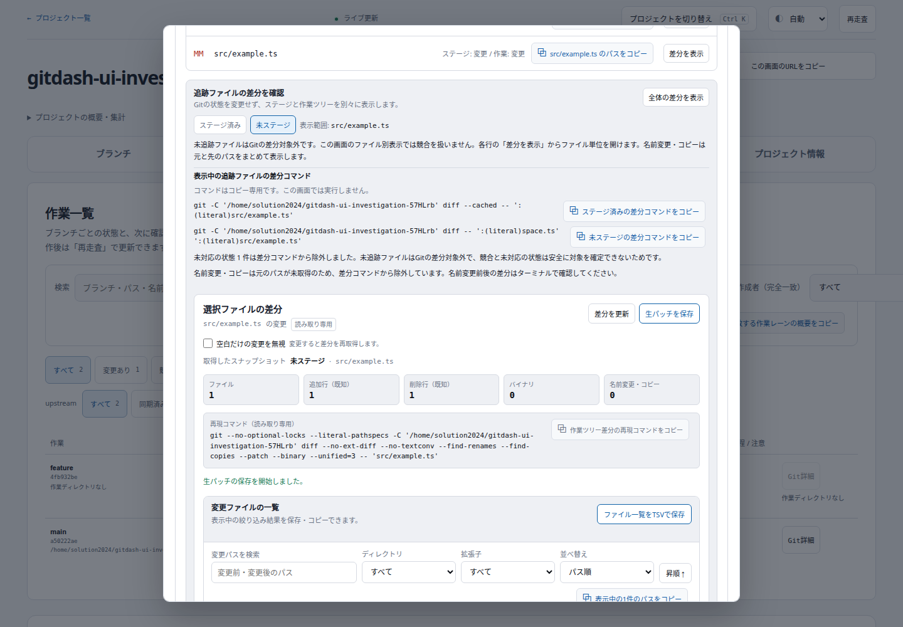
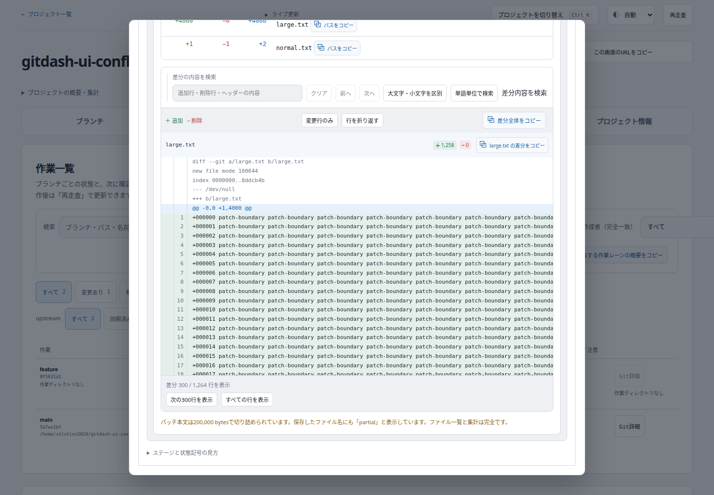

2026年10月19日。ファイル tab に revision 固定の閲覧と行の変更元確認を追加し、Git詳細からステージ別の差分を確認できるようにしました。
30 + 14 × 5 = 100点
ユーザー指定の加点基準による点数です。品質の客観的保証ではありません。既存コンポーネントの再利用や修正の重複加点はありません。
| 領域 | 追加機能・価値 | 加点 |
|---|---|---|
| Files | Browse directories and breadcrumbs at an explicitly pinned revision | +5 |
| Files | Inspect committed text and binary content without reading checkout paths | +5 |
| Files | Search all retrieved paths across directories | +5 |
| Files | Download the complete bounded blob with binary bytes preserved | +5 |
| Files | Open existing file history with the exact path and immutable revision prefilled | +5 |
| Blame | Inspect each line’s author and source commit at an explicit revision | +5 |
| Blame | Filter retrieved lines by exact author and commit | +5 |
| Blame | Request an explicit inclusive start/end line range | +5 |
| Blame | Inspect the source commit from a selected attributed line | +5 |
| Blame | Export matching annotated lines as CSV | +5 |
| Working diff | Switch between staged and unstaged changes | +5 |
| Working diff | Open a tracked status file’s diff, preserving rename pairs | +5 |
| Working diff | Ignore whitespace changes with an explicit control | +5 |
| Working diff | Download raw patches, marking bounded partial output explicitly | +5 |
Frontend 200件、Backend 248件成功。本番ビルド成功。独立レビューで未解決P1なし。実ブラウザーでファイル移動、内容・ダウンロード、行範囲・絞り込み・CSV、差分切替・空白無視、競合除外、部分パッチ保存を確認。1440pxと390pxでページの横はみ出しとpage errorなし。
mainへコミット・GitHubへpushし、既存Compose wrapperで再ビルド・再起動。アプリを開く。blobの完全保存は1MiBまで、blameは1000行・2MiB本文まで、差分は200,000bytesまで。部分結果は明示します。
詳細・再現手順 / GUI結果 / 競合・上限GUI結果



